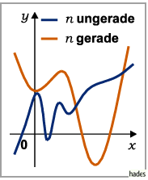
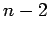
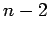
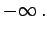

Polynom n-ten Grades
Die ganzrationale Funktion n-ten Grades
stellt eine Kurve n-ter Ordnung vom parabolischen Typ dar.

- Fall 1: n ungerade
- Für an > 0 verläuft y stetig von
 bis
bis  und für an <0 von bis
und für an <0 von bis  . Die x-Achse kann von der Kurve bis zu n mal geschnitten bzw. berührt werden (s. auch Gleichung n-ten Grades und Polynomgleichungen). Die Funktion (2.43) besitzt entweder keine oder eine gerade Anzahl von bis zu n-1 Extremwerten, wobei Minima und Maxima einander abwechseln; die Zahl der Wendepunkte ist ungerade und liegt zwischen 1 und . Asymptoten oder singuläre Punkte gibt es nicht.
. Die x-Achse kann von der Kurve bis zu n mal geschnitten bzw. berührt werden (s. auch Gleichung n-ten Grades und Polynomgleichungen). Die Funktion (2.43) besitzt entweder keine oder eine gerade Anzahl von bis zu n-1 Extremwerten, wobei Minima und Maxima einander abwechseln; die Zahl der Wendepunkte ist ungerade und liegt zwischen 1 und . Asymptoten oder singuläre Punkte gibt es nicht.
- Fall 2: n gerade
- Für an > 0 hat y einen stetigen Verlauf von über ein Minimum bis und für an < 0 von über ein Maximum nach  Die Kurve schneidet oder berührt die x-Achse entweder nicht oder 1 bis n mal; Maxima und Minima wechseln einander ab; die Anzahl der Wendepunkte ist gerade. Asymptoten oder singuläre Punkte existieren nicht.
Vor dem Zeichnen der Kurven empfiehlt es sich, zuerst Extremwerte, Wendepunkte und die Werte der ersten Ableitung in diesen Punkten zu bestimmen, dann die Kurventangenten einzuzeichnen, um schließlich alle diese Punkte stetig miteinander zu verbinden.